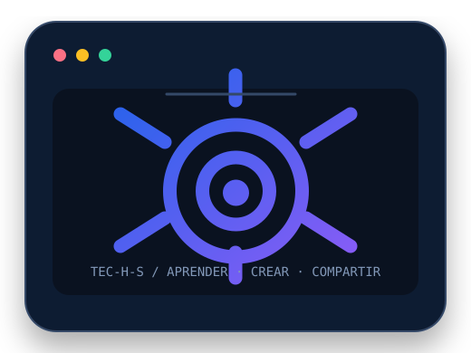

Datos y patrones
Los ejemplos ayudan a un modelo a encontrar regularidades.
La inteligencia artificial reúne métodos que permiten a los sistemas reconocer patrones, generar contenido o apoyar decisiones a partir de datos.
Empezar el tutorial →
Distingue reglas de aprendizaje, mira cómo influyen los datos y evalúa los resultados con criterio.
Los ejemplos ayudan a un modelo a encontrar regularidades.
Un modelo entrenado estima una respuesta para datos nuevos.
Revisa errores, sesgos, privacidad y límites antes de confiar en una salida.
Un modelo de aprendizaje automático encuentra relaciones en ejemplos y usa esas relaciones para hacer predicciones.
En programación tradicional se escriben reglas explícitas. En aprendizaje automático, se proporciona un conjunto de ejemplos y un método de entrenamiento ajusta el modelo para reducir sus errores. La calidad y variedad de los ejemplos importan.
ejemplos = ["gato", "perro", "gato"]
modelo = entrenar(ejemplos)
prediccion = modelo.clasificar("perro")
print(prediccion) # "perro"Imagina un clasificador que separa mensajes importantes de mensajes promocionales.
datos = ["reunión a las 10", "oferta especial"]
etiquetas = ["importante", "promoción"]
# Evalúa el modelo también con mensajes nuevos¿Qué necesita un modelo de aprendizaje automático para detectar patrones?
Piensa en la información que se usa durante el entrenamiento.
Lección pendiente
El progreso se guarda en este navegador.
Conecta lo que aprendes con nuevas disciplinas.